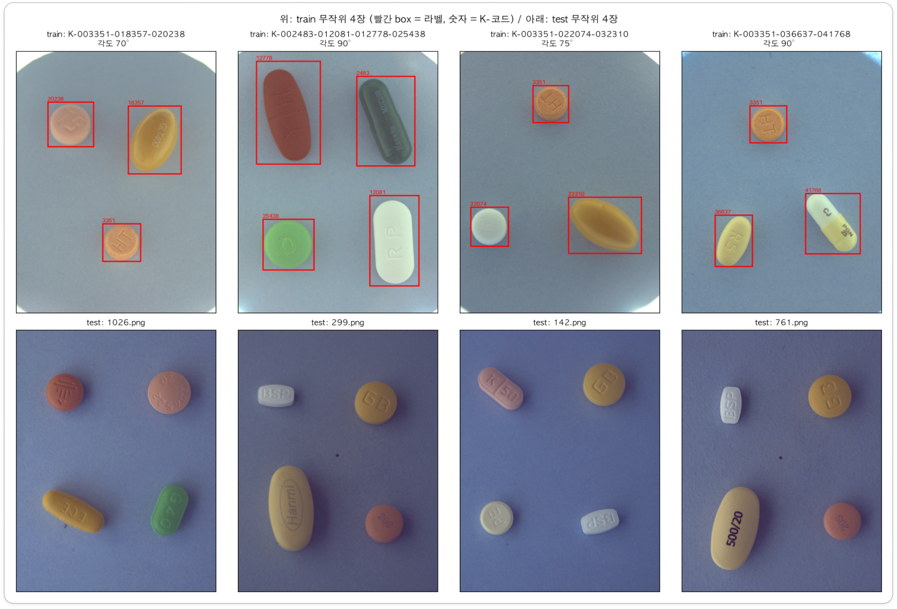

1 / 0
문제 정의
알약 사진 한 장에서 위치와 이름을, 아주 정확한 box로 찾아야 합니다.
사용자가 복용 중인 약 사진을 찍으면, 알약마다 위치(bbox)와 약 이름(74종)을 찾습니다.
채점은 IoU 0.75부터 시작합니다. 높이 182px인 box를 192px로 그리면 IoU 약 0.948이라 0.95 기준에서는 오답입니다.

74종채점 대상 클래스
mAP@[0.75:0.95]IoU 0.75~0.95 다섯 기준의 클래스별 AP 평균
232장 / 842장학습 사진 / test 사진
하루 10회Kaggle 제출 한도
← →/Space 이동 · N 노트 · Esc 목차